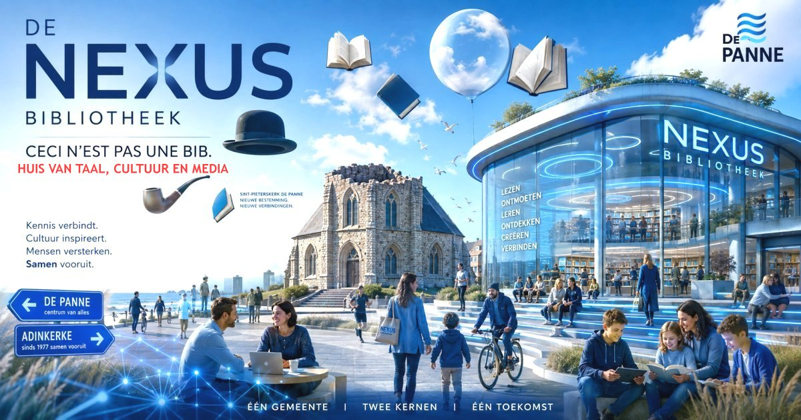

De naam "Maurice Calmeyn bibliotheek" is onaanvaardbaar voor diverse groepen inwoners van De Panne, zoals de anti-franskiljons, katholieken, inwoners van Adinkerke, anti-communisten enz. Het blijkt nu ook dat die naam geen rechtsgrond en geen motivering heeft.
Aan ChatGPT werd gevraagd om enkele geschikte namen voor de nieuwe bibliotheek in de voormalige Sint-Pieterskerk, voor te stellen. Uit het tiental voorstellen, werd de naam "De Nexus Bibliotheek" gekozen. De motivering werd in een pdf bestand neergeschreven.

Gebruik van AI
Deze webpagina werd ontwikkeld met behulp van artificiële intelligentie (AI).
AI werd gebruikt als hulpmiddel bij het programmeren, de vormgeving, het ontwerpen en verbeteren van afbeeldingen en het opstellen van teksten.